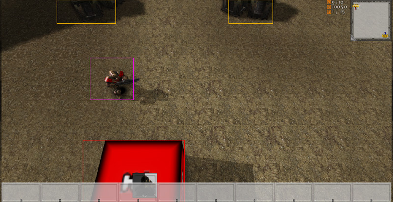

UDN
Search public documentation:
DevelopmentKitGemsRTSStarterKitJP
English Translation
中国翻译
한국어
Interested in the Unreal Engine?
Visit the Unreal Technology site.
Looking for jobs and company info?
Check out the Epic games site.
Questions about support via UDN?
Contact the UDN Staff
中国翻译
한국어
Interested in the Unreal Engine?
Visit the Unreal Technology site.
Looking for jobs and company info?
Check out the Epic games site.
Questions about support via UDN?
Contact the UDN Staff
RTS Starter Kit (RTS スターターキット)
2011年9月に UDK で最終テスト実施済み
概要
このスターターキットには、サンプルコードが含まれています。このサンプルコードは、リアルタイム ストラテジー (RTS) ゲームを開発する際の土台として使用することができます。(リアルタイム ストラテジー ゲームには、UDK を使用して現在開発中である Hostile Worlds などがあります)。

同梱されているものについて
プラットフォーマー スターターキット や レーサー スターターキット とは異なり、このスターターキットには、大量のコードとコンテンツが含まれています。また、リアルタイム ストラテジー ゲームにはそれほど関連のない高度な機能もいくつか含まれていますが、他の開発分野でも役立つことがあるでしょう。
- Platform abstraction (プラットフォーム抽象化) - RTS Starter Kit は、プレイヤーがプレイしているプラットフォームを識別することができます。プレイヤーが使用しているプラットフォームに応じて、異なるプレイヤーのコントローラおよび HUD クラスが使用されます。ただし、PC および コンソール プラットフォームのクラスは、スタブアウトされているにすぎません。現在のところ、モバイルプラットフォームだけが完全にサポートされています。
- Camera (カメラ) - RTS Starter Kit には、俯瞰カメラのように振る舞うカメラを作成するためのサンプルが含まれています。パンおよびタッチパン、ズームをサポートしています。
- Structures (建造物) - RTS Starter Kit には、プレイヤーが建造できる建造物を扱うサンプルコードが含まれています。
- Units (ユニット) - RTS Starter Kit には、プレイヤーが命令を出すことができるユニット (部隊) を扱うサンプルコードが含まれています。
- Skills (スキル) - RTS Starter Kit には、ユニットのスキルを扱うサンプルコードが含まれています。
- Resource Management (リソース管理) - RTS Starter Kit には、プレイヤーのためのリソースを扱うサンプルコードが含まれています。
- AI - RTS Starter Kit には、敵の AI プレイヤーを作成する方法を示すサンプルコードが含まれています。この AI プレイヤーは、建造物とユニットを作ることができ、プレイヤーと戦うことができます。
- Upgrades (アップグレード) - RTS Starter Kit には、ユニットのためのアップグレードを作成する方法を示すサンプルコードが含まれています。
- Structure Upgrades (建造物のアップグレード) - RTS Starter Kit には、アップグレードすることによってより高度な形態に発展する建造物の作成方法を示すサンプルコードが含まれています。
- Networking (ネットワーク) - RTS Starter Kit は、ネットワークを考慮に入れて作成されています。そのため、レプリケーションがセットアップされています。
- Documentation (ドキュメンテーション) - RTS Starter Kit は、 完全にドキュメント化されています。 Javadocs と類似したスタイルをとっています。
- UI (ユーザーインターフェイス) - RTS Starter Kit には、小規模なカスタムの UI コードベースが含まれています。これは、単純なボタンを扱います。
コードの構造
RTS Starter Kit は大規模で複雑なプロジェクトです。したがって、RTS Starter Kit を拡張、改変してゲームを作成するには、事前に、あらゆる部分を理解しておくことが重要となります。
マウスまたは指の「真下」にあるものをどのように検知するか
マウスのインターフェイスコードは、 Mouse Interface Development Kit Gem (マウスインターフェイス開発キット Gem) とは異なる動作をします。RTS ゲームの場合、遠方のユニットが選びづらくなっては困ります。また、さまざまな事柄に優先順位をつけて、いつでも選択できるようにする必要があるでしょう。たとえば、ユニットの重要度を建造物の重要度よりも高くし、建造物の重要度をリソースポイントの重要度よりも高くしなければならない場合があります。RTS Starter Kit は、これらの問題を解決するために、スクリーン空間ボックスを作成して、スクリーン上でユニットの大きさを表わします。遠方のユニットが小さなスクリーン ボックスになるという問題に対処するには、ボックスのサイズを人工的に水増しすることができます。(しかし、カメラのスタイルにより、開発中にこの問題が実際に起きることはありませんでした)。優先順位の問題を解決するには、ユニットを最初にイタレートし、次に建造物を、その次にリソースをイタレートします。タッチはすでにスクリーン内でキャプチャされているため、ボックス内のその地点から比較を実行することによって、マウスまたは指が何の上にあるかを調べます。マウスまたは指が何もタッチしていない場合は、ワールドであったと想定されることになります。
次のコードスニペットでは、ワールド内にある全リソースをイタレートし、各リソースのためのスクリーン バウンディング ボックスを計算しています。
// Calculate the screen bounding boxes for all of the resources
for (i = 0; i < UDKRTSGameReplicationInfo.Resources.Length; ++i)
{
if (UDKRTSGameReplicationInfo.Resources[i] != None)
{
UDKRTSGameReplicationInfo.Resources[i].ScreenBoundingBox = CalculateScreenBoundingBox(Self, UDKRTSGameReplicationInfo.Resources[i], UDKRTSGameReplicationInfo.Resources[i].CollisionCylinder);
// Render the debug bounding box
if (ShouldDisplayDebug('BoundingBoxes'))
{
Canvas.SetPos(UDKRTSGameReplicationInfo.Resources[i].ScreenBoundingBox.Min.X, UDKRTSGameReplicationInfo.Resources[i].ScreenBoundingBox.Min.Y);
Canvas.DrawColor = UDKRTSGameReplicationInfo.Resources[i].BoundingBoxColor;
Canvas.DrawBox(UDKRTSGameReplicationInfo.Resources[i].ScreenBoundingBox.Max.X - UDKRTSGameReplicationInfo.Resources[i].ScreenBoundingBox.Min.X, UDKRTSGameReplicationInfo.Resources[i].ScreenBoundingBox.Max.Y - UDKRTSGameReplicationInfo.Resources[i].ScreenBoundingBox.Min.Y);
}
}
}
function Box CalculateScreenBoundingBox(HUD HUD, Actor Actor, PrimitiveComponent PrimitiveComponent)
{
local Box ComponentsBoundingBox, OutBox;
local Vector BoundingBoxCoordinates[8];
local int i;
if (HUD == None || PrimitiveComponent == None || Actor == None || WorldInfo.TimeSeconds - Actor.LastRenderTime >= 0.1f)
{
OutBox.Min.X = -1.f;
OutBox.Min.Y = -1.f;
OutBox.Max.X = -1.f;
OutBox.Max.Y = -1.f;
return OutBox;
}
ComponentsBoundingBox.Min = PrimitiveComponent.Bounds.Origin - PrimitiveComponent.Bounds.BoxExtent;
ComponentsBoundingBox.Max = PrimitiveComponent.Bounds.Origin + PrimitiveComponent.Bounds.BoxExtent;
// Z1
// X1, Y1
BoundingBoxCoordinates[0].X = ComponentsBoundingBox.Min.X;
BoundingBoxCoordinates[0].Y = ComponentsBoundingBox.Min.Y;
BoundingBoxCoordinates[0].Z = ComponentsBoundingBox.Min.Z;
BoundingBoxCoordinates[0] = HUD.Canvas.Project(BoundingBoxCoordinates[0]);
// X2, Y1
BoundingBoxCoordinates[1].X = ComponentsBoundingBox.Max.X;
BoundingBoxCoordinates[1].Y = ComponentsBoundingBox.Min.Y;
BoundingBoxCoordinates[1].Z = ComponentsBoundingBox.Min.Z;
BoundingBoxCoordinates[1] = HUD.Canvas.Project(BoundingBoxCoordinates[1]);
// X1, Y2
BoundingBoxCoordinates[2].X = ComponentsBoundingBox.Min.X;
BoundingBoxCoordinates[2].Y = ComponentsBoundingBox.Max.Y;
BoundingBoxCoordinates[2].Z = ComponentsBoundingBox.Min.Z;
BoundingBoxCoordinates[2] = HUD.Canvas.Project(BoundingBoxCoordinates[2]);
// X2, Y2
BoundingBoxCoordinates[3].X = ComponentsBoundingBox.Max.X;
BoundingBoxCoordinates[3].Y = ComponentsBoundingBox.Max.Y;
BoundingBoxCoordinates[3].Z = ComponentsBoundingBox.Min.Z;
BoundingBoxCoordinates[3] = HUD.Canvas.Project(BoundingBoxCoordinates[3]);
// Z2
// X1, Y1
BoundingBoxCoordinates[4].X = ComponentsBoundingBox.Min.X;
BoundingBoxCoordinates[4].Y = ComponentsBoundingBox.Min.Y;
BoundingBoxCoordinates[4].Z = ComponentsBoundingBox.Max.Z;
BoundingBoxCoordinates[4] = HUD.Canvas.Project(BoundingBoxCoordinates[4]);
// X2, Y1
BoundingBoxCoordinates[5].X = ComponentsBoundingBox.Max.X;
BoundingBoxCoordinates[5].Y = ComponentsBoundingBox.Min.Y;
BoundingBoxCoordinates[5].Z = ComponentsBoundingBox.Max.Z;
BoundingBoxCoordinates[5] = HUD.Canvas.Project(BoundingBoxCoordinates[5]);
// X1, Y2
BoundingBoxCoordinates[6].X = ComponentsBoundingBox.Min.X;
BoundingBoxCoordinates[6].Y = ComponentsBoundingBox.Max.Y;
BoundingBoxCoordinates[6].Z = ComponentsBoundingBox.Max.Z;
BoundingBoxCoordinates[6] = HUD.Canvas.Project(BoundingBoxCoordinates[6]);
// X2, Y2
BoundingBoxCoordinates[7].X = ComponentsBoundingBox.Max.X;
BoundingBoxCoordinates[7].Y = ComponentsBoundingBox.Max.Y;
BoundingBoxCoordinates[7].Z = ComponentsBoundingBox.Max.Z;
BoundingBoxCoordinates[7] = HUD.Canvas.Project(BoundingBoxCoordinates[7]);
// Find the left, top, right and bottom coordinates
OutBox.Min.X = HUD.Canvas.ClipX;
OutBox.Min.Y = HUD.Canvas.ClipY;
OutBox.Max.X = 0;
OutBox.Max.Y = 0;
// Iterate though the bounding box coordinates
for (i = 0; i < ArrayCount(BoundingBoxCoordinates); ++i)
{
// Detect the smallest X coordinate
if (OutBox.Min.X > BoundingBoxCoordinates[i].X)
{
OutBox.Min.X = BoundingBoxCoordinates[i].X;
}
// Detect the smallest Y coordinate
if (OutBox.Min.Y > BoundingBoxCoordinates[i].Y)
{
OutBox.Min.Y = BoundingBoxCoordinates[i].Y;
}
// Detect the largest X coordinate
if (OutBox.Max.X < BoundingBoxCoordinates[i].X)
{
OutBox.Max.X = BoundingBoxCoordinates[i].X;
}
// Detect the largest Y coordinate
if (OutBox.Max.Y < BoundingBoxCoordinates[i].Y)
{
OutBox.Max.Y = BoundingBoxCoordinates[i].Y;
}
}
// Check if the bounding box is within the screen
if ((OutBox.Min.X < 0 && OutBox.Max.X < 0) || (OutBox.Min.X > HUD.Canvas.ClipX && OutBox.Max.X > HUD.Canvas.ClipX) || (OutBox.Min.Y < 0 && OutBox.Max.Y < 0) || (OutBox.Min.Y > HUD.Canvas.ClipY && OutBox.Max.Y > HUD.Canvas.ClipY))
{
OutBox.Min.X = -1.f;
OutBox.Min.Y = -1.f;
OutBox.Max.X = -1.f;
OutBox.Max.Y = -1.f;
}
else
{
// Clamp the bounding box coordinates
OutBox.Min.X = FClamp(OutBox.Min.X, 0.f, HUD.Canvas.ClipX);
OutBox.Max.X = FClamp(OutBox.Max.X, 0.f, HUD.Canvas.ClipX);
OutBox.Min.Y = FClamp(OutBox.Min.Y, 0.f, HUD.Canvas.ClipY);
OutBox.Max.Y = FClamp(OutBox.Max.Y, 0.f, HUD.Canvas.ClipY);
}
return OutBox;
}
// Check if we touch any game play relevant objects
if (PlayerReplicationInfo != None)
{
UDKRTSTeamInfo = UDKRTSTeamInfo(PlayerReplicationInfo.Team);
if (UDKRTSTeamInfo != None)
{
UDKRTSMobileHUD = UDKRTSMobileHUD(MyHUD);
if (UDKRTSMobileHUD != None)
{
// Are we touching a pawn?
if (TouchEvent.Response == ETR_None && UDKRTSTeamInfo.Pawns.Length > 0)
{
for (i = 0; i < UDKRTSTeamInfo.Pawns.Length; ++i)
{
if (UDKRTSTeamInfo.Pawns[i] != None && class'UDKRTSMobileHUD'.static.IsPointWithinBox(TouchLocation, UDKRTSTeamInfo.Pawns[i].ScreenBoundingBox) && TouchEvents.Find('AssociatedActor', UDKRTSTeamInfo.Pawns[i]) == INDEX_NONE)
{
UDKRTSTeamInfo.Pawns[i].Selected();
UDKRTSTeamInfo.Pawns[i].RegisterHUDActions(UDKRTSMobileHUD);
TouchEvent.AssociatedActor = UDKRTSTeamInfo.Pawns[i];
TouchEvent.Response = ETR_Pawn;
break;
}
}
}
// Are we touching a structure
if (TouchEvent.Response == ETR_None && UDKRTSTeamInfo.Structures.Length > 0)
{
for (i = 0; i < UDKRTSTeamInfo.Structures.Length; ++i)
{
if (class'UDKRTSMobileHUD'.static.IsPointWithinBox(TouchLocation, UDKRTSTeamInfo.Structures[i].ScreenBoundingBox) && TouchEvents.Find('AssociatedActor', UDKRTSTeamInfo.Structures[i]) == INDEX_NONE)
{
UDKRTSTeamInfo.Structures[i].Selected();
UDKRTSTeamInfo.Structures[i].RegisterHUDActions(UDKRTSMobileHUD);
TouchEvent.AssociatedActor = UDKRTSTeamInfo.Structures[i];
TouchEvent.Response = ETR_Structure;
break;
}
}
}
}
}
}
建造物 / ユニットを選択するとどのようにボタンが HUD 上に表示されるか?
RTS Starter Kit では、ボタンのことを HUD アクションと呼びます。HUD アクションは、UDKRTSHUD で定義される構造体です。 次のコードスニペットでは、HUD アクションによって、まず、テクスチャとテクスチャの UV 座標が定義されています。これらの変数は、Unreal Editor にエクスポーズされるため、ゲーム開発者が値をセットすることができます。残りの 4 つの変数は、インゲームで使用されて、他の関数を実行します。これについては、後ほど解説します。
次のコードスニペットでは、HUD アクションによって、まず、テクスチャとテクスチャの UV 座標が定義されています。これらの変数は、Unreal Editor にエクスポーズされるため、ゲーム開発者が値をセットすることができます。残りの 4 つの変数は、インゲームで使用されて、他の関数を実行します。これについては、後ほど解説します。
// HUD actions on the HUD
struct SHUDAction
{
var() Texture2D Texture;
var() float U;
var() float V;
var() float UL;
var() float VL;
var EHUDActionReference Reference;
var int Index;
var bool PostRender;
var delegate<IsHUDActionActive> IsHUDActionActiveDelegate;
};
// HUD actions that are associated to an actor on the HUD
struct SAssociatedHUDAction
{
var Actor AssociatedActor;
var array<SHUDAction> HUDActions;
};
simulated function RegisterHUDActions(UDKRTSMobileHUD HUD)
{
local int i;
local SHUDAction SendHUDAction;
if (HUD == None || OwnerReplicationInfo == None || HUD.AssociatedHUDActions.Find('AssociatedActor', Self) != INDEX_NONE || Health <= 0)
{
return;
}
// Register the camera center HUD action
if (Portrait.Texture != None)
{
SendHUDAction = Portrait;
SendHUDAction.Reference = EHAR_Center;
SendHUDAction.Index = -1;
SendHUDAction.PostRender = true;
HUD.RegisterHUDAction(Self, SendHUDAction);
}
}
function RegisterHUDAction(Actor AssociatedActor, SHUDAction HUDAction)
{
local SAssociatedHUDAction AssociatedHUDAction;
local int IndexA, IndexB;
// Get index A
IndexA = AssociatedHUDActions.Find('AssociatedActor', AssociatedActor);
if (IndexA != INDEX_NONE)
{
// Get index B
IndexB = AssociatedHUDActions[IndexA].HUDActions.Find('Reference', HUDAction.Reference);
if (IndexB != INDEX_NONE && AssociatedHUDActions[IndexA].HUDActions[IndexB].Index == HUDAction.Index)
{
return;
}
}
if (IndexA != INDEX_NONE)
{
// Add the associated HUD action
AssociatedHUDActions[IndexA].HUDActions.AddItem(HUDAction);
}
else
{
// Add the associated HUD action
AssociatedHUDAction.AssociatedActor = AssociatedActor;
AssociatedHUDAction.HUDActions.AddItem(HUDAction);
AssociatedHUDActions.AddItem(AssociatedHUDAction);
}
}
event PostRender()
{
Super.PostRender();
if (AssociatedHUDActions.Length > 0)
{
Offset.X = PlayableSpaceLeft;
Offset.Y = 0;
Size.X = SizeX * 0.0625f;
Size.Y = Size.X;
for (i = 0; i < AssociatedHUDActions.Length; ++i)
{
if (AssociatedHUDActions[i].AssociatedActor != None && AssociatedHUDActions[i].HUDActions.Length > 0)
{
Offset.X = HUDProperties.ScrollWidth;
for (j = 0; j < AssociatedHUDActions[i].HUDActions.Length; ++j)
{
if (AssociatedHUDActions[i].HUDActions[j].IsHUDActionActiveDelegate != None)
{
IsHUDActionActive = AssociatedHUDActions[i].HUDActions[j].IsHUDActionActiveDelegate;
if (!IsHUDActionActive(AssociatedHUDActions[i].HUDActions[j].Reference, AssociatedHUDActions[i].HUDActions[j].Index, false))
{
Canvas.SetDrawColor(191, 191, 191, 191);
}
else
{
Canvas.SetDrawColor(255, 255, 255);
}
IsHUDActionActive = None;
}
else
{
Canvas.SetDrawColor(255, 255, 255);
}
Canvas.SetPos(Offset.X, Offset.Y);
Canvas.DrawTile(AssociatedHUDActions[i].HUDActions[j].Texture, Size.X, Size.Y, AssociatedHUDActions[i].HUDActions[j].U, AssociatedHUDActions[i].HUDActions[j].V, AssociatedHUDActions[i].HUDActions[j].UL, AssociatedHUDActions[i].HUDActions[j].VL);
if (AssociatedHUDActions[i].HUDActions[j].PostRender)
{
UDKRTSHUDActionInterface = UDKRTSHUDActionInterface(AssociatedHUDActions[i].AssociatedActor);
if (UDKRTSHUDActionInterface != None)
{
UDKRTSHUDActionInterface.PostRenderHUDAction(Self, AssociatedHUDActions[i].HUDActions[j].Reference, AssociatedHUDActions[i].HUDActions[j].Index, Offset.X, Offset.Y, Size.X, Size.Y);
}
}
Offset.X += Size.X;
}
}
Offset.Y += Size.Y;
}
}
}
simulated function PostRenderHUDAction(HUD HUD, EHUDActionReference Reference, int Index, int PosX, int PosY, int SizeX, int SizeY)
{
local float HealthPercentage;
local float HealthBarWidth, HealthBarHeight;
if (HUD == None || HUD.Canvas == None || Health <= 0)
{
return;
}
if (Reference == EHAR_Center)
{
// Get the health bar percentage
HealthPercentage = float(Health) / float(HealthMax);
// Render the health bar border
HealthBarWidth = SizeX - 2;
HealthBarHeight = 8;
HUD.Canvas.SetPos(PosX + 1, PosY + SizeY - HealthBarHeight - 1);
HUD.Canvas.SetDrawColor(0, 0, 0, 191);
HUD.Canvas.DrawBox(HealthBarWidth, HealthBarHeight);
HealthBarWidth -= 4;
HealthBarHeight -= 4;
// Render the missing health
HUD.Canvas.SetPos(PosX + 3, PosY + SizeY - HealthBarHeight - 3);
HUD.Canvas.SetDrawColor(0, 0, 0, 127);
HUD.Canvas.DrawRect(HealthBarWidth, HealthBarHeight);
// Render the health bar
HUD.Canvas.SetPos(PosX + 3, PosY + SizeY - HealthBarHeight - 3);
HUD.Canvas.SetDrawColor(255 * (1.f - HealthPercentage), 255 * HealthPercentage, 0, 191);
HUD.Canvas.DrawRect(HealthBarWidth * HealthPercentage, HealthBarHeight);
}
}
HUD アクションが押された場合どのような処理が行われるか?
タッチ入力が UDKRTSMobilePlayerController によって受け取られると、まず、HUD に渡されて、タッチの位置が HUD アクションの範囲内にあるかどうかがチェックされます。範囲内である場合は、最初に HUD アクションのアクティブなデリゲートを呼び出します。このデリゲートによって、アクタが結びつくことができるようになり、HUD アクションによって何らかの動作が実行されるか否かが決まります。HUD アクションの有効化が許可されている場合は、UDKRTSPlayerController 内の StartHUDAction を呼び出します。これによって、クライアントからサーバーへのリモートプロシージャコールにおいて、HUD アクションがラップされるようになります。さらに、HUD アクションに関連づけられているアクタは、UDKRTSHUDActionInterface にキャストされます。キャストに成功すると、HandleHUDAction が呼び出されて、アクタが何らかを実行します。
function ETouchResponse InputTouch(Vector2D ScreenTouchLocation)
{
// Check the HUD action controls
if (AssociatedHUDActions.Length > 0)
{
Offset.X = PlayableSpaceLeft;
Offset.Y = 0;
Size.X = SizeX * 0.0625f;
Size.Y = Size.X;
for (i = 0; i < AssociatedHUDActions.Length; ++i)
{
if (AssociatedHUDActions[i].AssociatedActor != None && AssociatedHUDActions[i].HUDActions.Length > 0)
{
Offset.X = HUDProperties.ScrollWidth;
for (j = 0; j < AssociatedHUDActions[i].HUDActions.Length; ++j)
{
if (ScreenTouchLocation.X >= Offset.X && ScreenTouchLocation.Y >= Offset.Y && ScreenTouchLocation.X <= Offset.X + Size.X && ScreenTouchLocation.Y <= Offset.Y + Size.Y)
{
if (AssociatedHUDActions[i].HUDActions[j].IsHUDActionActiveDelegate != None)
{
IsHUDActionActive = AssociatedHUDActions[i].HUDActions[j].IsHUDActionActiveDelegate;
if (!IsHUDActionActive(AssociatedHUDActions[i].HUDActions[j].Reference, AssociatedHUDActions[i].HUDActions[j].Index, true))
{
IsHUDActionActive = None;
return ETR_HUDAction;
}
else
{
IsHUDActionActive = None;
}
}
// Start the HUD action
UDKRTSMobilePlayerController.StartHUDAction(AssociatedHUDActions[i].HUDActions[j].Reference, AssociatedHUDActions[i].HUDActions[j].Index, AssociatedHUDActions[i].AssociatedActor);
return ETR_HUDAction;
}
Offset.X += Size.X;
}
Offset.Y += Size.Y;
}
}
}
}
/**
* Send an action command to an actor
*
* @param Reference HUD action reference
* @param Index HUD action index
* @param Actor Associated actor
*/
simulated function StartHUDAction(EHUDActionReference Reference, int Index, Actor Actor)
{
// Sync with the server
if (Role < Role_Authority && class'UDKRTSUtility'.static.HUDActionNeedsToSyncWithServer(Reference) && UDKRTSHUDActionInterface(Actor) != None)
{
ServerHUDAction(Reference, Index, Actor);
}
BeginHUDAction(Reference, Index, Actor);
}
/**
* Sync the action command for an actor
*
* @param Reference HUD action reference
* @param Index HUD action index
* @param Actor Associated actor
*/
reliable server function ServerHUDAction(EHUDActionReference Reference, int Index, Actor Actor)
{
BeginHUDAction(Reference, Index, Actor);
}
/**
* Begin an action command to an actor
*/
simulated function BeginHUDAction(EHUDActionReference Reference, int Index, Actor Actor)
{
local UDKRTSHUDActionInterface UDKRTSHUDActionInterface;
UDKRTSHUDActionInterface = UDKRTSHUDActionInterface(Actor);
if (UDKRTSHUDActionInterface != None)
{
UDKRTSHUDActionInterface.HandleHUDAction(Reference, Index);
}
}
リソースはどのように処理されるか?
デフォルトでは、3 つのリソースが本スターターキットにあります。これらは、UDKRTSPlayerReplicationInfo の中で、レプリケーション通知 int 型変数として定義されています。レプリケーションのコードブロックでは、変数が「ダーティ」である場合 (すなわち、クライアントとサーバーで異なる場合)、これら 3 つの変数がクライアントに対してのみレプリケートされ、レプリケーションが一方通行であることが定められています (サーバーのみがこの変数をクライアントに対してレプリケートするのであって、クライアントはサーバーに対してこれら変数をレプリケートすることはできません)。
// How much resources the player has
var RepNotify int Resources;
// How much power the player has
var RepNotify int Power;
// Players current population cap
var RepNotify int PopulationCap;
// Replication block
replication
{
if (bNetDirty && Role == Role_Authority)
Resources, Power, PopulationCap;
}
/**
* Called when a variable with the property flag "RepNotify" is replicated
*
* @param VarName Name of the variable that was replicated
*/
simulated event ReplicatedEvent(name VarName)
{
if (VarName == 'Resources')
{
// Resources variable has changed
}
else if (VarName == 'Power')
{
// Power variable has changed
}
else if (VarName == 'PopulationCap')
{
// PopulationCap variable has changed
}
else
{
Super.ReplicatedEvent(VarName);
}
}
ユニット作成をどのように処理するか？
プレイヤーは、自身のコントローラーのリモート・プロシージャ―・コールを通じてユニット作成処理をします。この方法は、プレイヤーとサーバー間でも最も直接的なルートになります。 下記のサンプルコードは、最終的にサーバーがプレイヤーのために新ユニットをスポーンする要因となる、構造フォームが構造したユニットをどのようにキューするかを論証したものです。このコードスニペットは、HandleHUDAction内にあります。この関数は、プレイヤーのコントローラーがクライアントとサーバーコールをHandleHUDActionへ同期するため、サーバーとクライアントで同時に実行されます（ UDKRTSPlayerController.StartHUDAction()、 UDKRTSPlayerController.ServerHUDAction()と UDKRTSPlayerController.BeginHUDAction()を参照）。最初にチェックされるのは、要求されたユニットインデックスが配列バウンド内にあるか否か、そしてプレイヤーによるユニットの構築が可能か否かです（プレイヤーが利用可能なリソースを十分持っているか、利用可能な人口等）。これらの条件をパスすると、ユニットの構築が開始したことをプレイヤーにサウンドで知らせます。そしてユニット構築のため、リソースが使用されます。この処理は応答時間の短縮のシミュレーションとしてクライアント側で実行されます。サーバー側でもコードは実行されるので、クライアント側のリソース値と違いが生じた場合、正確な値がサーバーで再現されます。この段階で新しいHUDアクションが作成され、プレイヤーのHUDへ追加されます。この段階でプレイヤーの指がまだ建造物に置かれていて、建造物のHUDアクションが可視化出来るためこのような処理となります。そして購入されたユニットのアーキタイプが、ユニットプロダクションキューへ追加されます。ユニット構築タイマーが開始していない場合、ここでスタートさせてください。
if (Index >= 0 && Index < BuildablePawnArchetypes.Length && class'UDKRTSPawn'.static.CanBuildPawn(BuildablePawnArchetypes[Index], OwnerReplicationInfo, false))
{
// Play the building sound
class'UDKRTSCommanderVoiceOver'.static.PlayBuildingSoundCue(OwnerReplicationInfo);
// Take resources away
OwnerReplicationInfo.Resources -= BuildablePawnArchetypes[Index].ResourcesCost;
OwnerReplicationInfo.Power -= BuildablePawnArchetypes[Index].PowerCost;
// Update the player controller's HUD actions
PlayerController = PlayerController(OwnerReplicationInfo.Owner);
if (PlayerController != None)
{
UDKRTSMobileHUD = UDKRTSMobileHUD(PlayerController.MyHUD);
if (UDKRTSMobileHUD != None)
{
SendHUDAction = BuildablePawnArchetypes[Index].BuildHUDAction;
SendHUDAction.Reference = EHAR_Building;
SendHUDAction.Index = QueuedUnitArchetypes.Length;
SendHUDAction.PostRender = true;
UDKRTSMobileHUD.RegisterHUDAction(Self, SendHUDAction);
}
}
// Add the unit to the queue
QueuedUnitArchetypes.AddItem(BuildablePawnArchetypes[Index]);
// Start the building unit timer if it isn't activated
if (!IsTimerActive(NameOf(BuildingUnit)))
{
SetTimer(BuildablePawnArchetypes[Index].BuildTime, false, NameOf(BuildingUnit));
}
}
simulated function BuildingUnit()
{
local Vector SpawnLocation;
local Rotator R;
local UDKRTSMobileHUD UDKRTSMobileHUD;
local PlayerController PlayerController;
local int i;
local SHUDAction SendHUDAction;
// Check if the structure is able to build a unit
if (!IsConstructed || QueuedUnitArchetypes.Length <= 0)
{
return;
}
// Update the HUD action list
PlayerController = PlayerController(OwnerReplicationInfo.Owner);
if (PlayerController != None)
{
UDKRTSMobileHUD = UDKRTSMobileHUD(PlayerController.MyHUD);
if (UDKRTSMobileHUD != None && UDKRTSMobileHUD.AssociatedHUDActions.Find('AssociatedActor', Self) != INDEX_NONE)
{
UDKRTSMobileHUD.UnregisterHUDActionByReference(Self, EHAR_Building);
if (QueuedUnitArchetypes.Length > 0)
{
for (i = 0; i < QueuedUnitArchetypes.Length; ++i)
{
if (QueuedUnitArchetypes[i] != None)
{
SendHUDAction = QueuedUnitArchetypes[i].BuildHUDAction;
SendHUDAction.Reference = EHAR_Building;
SendHUDAction.Index = i;
SendHUDAction.PostRender = true;
UDKRTSMobileHUD.RegisterHUDAction(Self, SendHUDAction);
}
}
}
}
}
// Get the appropriate spawn location
if (Role == Role_Authority)
{
if (RallyPointLocation == Location)
{
R.Yaw = Rand(65536);
SpawnLocation = Location + Vector(R) * (QueuedUnitArchetypes[0].CylinderComponent.CollisionRadius + UnitSpawnRadius);
}
else
{
SpawnLocation = Location + Normal(RallyPointLocation - Location) * (QueuedUnitArchetypes[0].CylinderComponent.CollisionRadius + UnitSpawnRadius);
}
SpawnLocation.Z -= CollisionCylinder.CollisionHeight;
// Request the pawn
RequestPawn(QueuedUnitArchetypes[0], SpawnLocation);
}
// Remove the unit from the queue
QueuedUnitArchetypes.Remove(0, 1);
// If there are still units left in the queue then start the building unit timer again
if (QueuedUnitArchetypes.Length > 0)
{
SetTimer(QueuedUnitArchetypes[0].BuildTime, false, NameOf(BuildingUnit));
}
}
function RequestPawn(UDKRTSPawn RequestedPawnArchetype, UDKRTSPlayerReplicationInfo RequestingReplicationInfo, Vector SpawnLocation, bool InRallyPointValid, Vector RallyPoint, Actor RallyPointActorReference)
{
local UDKRTSPawn UDKRTSPawn;
local UDKRTSAIController UDKRTSAIController;
local UDKRTSResource UDKRTSResource;
if (RequestedPawnArchetype == None || RequestingReplicationInfo == None)
{
return;
}
UDKRTSPawn = Spawn(RequestedPawnArchetype.Class,,, SpawnLocation + Vect(0.f, 0.f, 1.f) * RequestedPawnArchetype.CylinderComponent.CollisionHeight,, RequestedPawnArchetype);
if (UDKRTSPawn != None)
{
if (UDKRTSPawn.bDeleteMe)
{
`Warn(Self$":: RequestPawn:: Deleted newly spawned pawn, refund player his money?");
}
else
{
UDKRTSPawn.SetOwnerReplicationInfo(RequestingReplicationInfo);
UDKRTSPawn.SpawnDefaultController();
UDKRTSAIController = UDKRTSAIController(UDKRTSPawn.Controller);
if (UDKRTSAIController != None)
{
if (RallyPointActorReference != None)
{
UDKRTSResource = UDKRTSResource(RallyPointActorReference);
if (UDKRTSResource != None && UDKRTSPawn.HarvestResourceInterval > 0)
{
UDKRTSAIController.HarvestResource(UDKRTSResource);
}
}
else if (InRallyPointValid)
{
UDKRTSAIController.MoveToPoint(RallyPoint);
}
}
}
}
}
simulated function SetOwnerReplicationInfo(UDKRTSPlayerReplicationInfo NewOwnerReplicationInfo)
{
local UDKRTSTeamInfo UDKRTSTeamInfo;
if (NewOwnerReplicationInfo == None)
{
return;
}
// Unit is possibly being converted to another team
if (OwnerReplicationInfo != None && OwnerReplicationInfo != NewOwnerReplicationInfo)
{
UDKRTSTeamInfo = UDKRTSTeamInfo(OwnerReplicationInfo.Team);
if (UDKRTSTeamInfo != None)
{
UDKRTSTeamInfo.RemovePawn(Self);
}
}
// Assign the team
OwnerReplicationInfo = NewOwnerReplicationInfo;
if (!UpdateTeamMaterials())
{
SetTimer(0.1f, true, NameOf(CheckTeamInfoForOwnerReplicationInfo));
}
// Give the pawn its default weapon, if it doesn't have one right now
if (Role == Role_Authority && WeaponArchetype != None && UDKRTSWeapon == None)
{
UDKRTSWeapon = Spawn(WeaponArchetype.Class, Self,, Location, Rotation, WeaponArchetype);
if (UDKRTSWeapon != None)
{
UDKRTSWeapon.SetOwner(Self);
UDKRTSWeapon.UDKRTSWeaponOwnerInterface = UDKRTSWeaponOwnerInterface(Self);
UDKRTSWeapon.Initialize();
UDKRTSWeapon.AttachToSkeletalMeshComponent(Mesh, LightEnvironment, WeaponSocketName);
}
}
// Send the client a world message that the pawn was trained
OwnerReplicationInfo.ReceiveWorldMessage(FriendlyName@"trained.", class'HUD'.default.WhiteColor, Location, Portrait.Texture, Portrait.U, Portrait.V, Portrait.UL, Portrait.VL);
class'UDKRTSCommanderVoiceOver'.static.PlayUnitReadySoundCue(OwnerReplicationInfo);
}
建造物作成をどのように処理するか？
スターターキットでは、ポーンのみが建造物を作成出来る仕組みです。通常は、プレイヤーがポーンに何かをさせたい時、「コマンド」メッシュが表示されます。動作が白い中空円として可視化されます。プレイヤーがストラクチャーアイコンのどれかを押すと、コマンドメッシュをプレイヤーが構築しようとしている建造物の透過バージョンへと変換します。
simulated function HandleHUDAction(EHUDActionReference Reference, int Index)
{
// Snip
// Build commands
case EHAR_Build:
if (Index >= 0 && Index < BuildableStructureArchetypes.Length)
{
CommandMesh.SetSkeletalMesh(BuildableStructureArchetypes[Index].PreviewSkeletalMesh);
CommandMode = ECM_BuildStructure;
}
break;
// Snip
}
simulated function SetCommandMeshTranslation(Vector NewTranslation, bool NewHide)
{
// Snip
case ECM_BuildStructure:
// Check if any buildings are within radius, if so, turn it red to signify that we cannot build here
if (CommandIndex >= 0 && CommandIndex < BuildableStructureArchetypes.Length)
{
CanBuildStructure = true;
ForEach VisibleCollidingActors(class'Actor', Actor, BuildableStructureArchetypes[CommandIndex].PlacementClearanceRadius, NewTranslation, true,, true)
{
CanBuildStructure = false;
break;
}
Material = (CanBuildStructure) ? BuildableStructureArchetypes[CommandIndex].CanBuildMaterial : BuildableStructureArchetypes[CommandIndex].CantBuildMaterial;
}
break;
// Snip
}
event PostRender()
{
// Snip
case ECM_BuildStructure:
if (PlayerUDKRTSTeamInfo.Pawns[i] != None)
{
PlayerUDKRTSTeamInfo.Pawns[i].HasPendingCommand = false;
// Playback the pawn confirmation effects and sounds
PlayerUDKRTSTeamInfo.Pawns[i].ConfirmCommand();
// Deproject the pending screen command location
Canvas.Deproject(PlayerUDKRTSTeamInfo.Pawns[i].PendingScreenCommandLocation, CurrentWorldLocation, CurrentWorldDirection);
// Find the world location for the pending move location
ForEach TraceActors(class'UDKRTSCameraBlockingVolume', UDKRTSCameraBlockingVolume, HitCurrentWorldLocation, HitNormal, CurrentWorldLocation + CurrentWorldDirection * 65536.f, CurrentWorldLocation)
{
// Request the structure
UDKRTSMobilePlayerController.RequestStructure(PlayerUDKRTSTeamInfo.Pawns[i].BuildableStructureArchetypes[PlayerUDKRTSTeamInfo.Pawns[i].CommandIndex], HitCurrentWorldLocation);
// Move the pawn there
UDKRTSMobilePlayerController.GiveMoveOrder(HitCurrentWorldLocation + Normal(PlayerUDKRTSTeamInfo.Pawns[i].Location - HitCurrentWorldLocation) * PlayerUDKRTSTeamInfo.Pawns[i].BuildableStructureArchetypes[PlayerUDKRTSTeamInfo.Pawns[i].CommandIndex].CollisionCylinder.CollisionRadius * 1.5f, PlayerUDKRTSTeamInfo.Pawns[i]);
break;
}
}
break;
// Snip
}
function UDKRTSStructure RequestStructure(UDKRTSStructure RequstedStructureArchetype, UDKRTSPlayerReplicationInfo RequestingReplicationInfo, Vector SpawnLocation)
{
local UDKRTSStructure UDKRTSStructure;
local Actor Actor;
local UDKRTSMobilePlayerController UDKRTSMobilePlayerController;
// Check object variables
if (RequstedStructureArchetype == None || RequestingReplicationInfo == None)
{
return None;
}
// Check that there are no nearby actors blocking construction
ForEach VisibleCollidingActors(class'Actor', Actor, RequstedStructureArchetype.PlacementClearanceRadius, SpawnLocation, true,, true)
{
class'UDKRTSCommanderVoiceOver'.static.PlayCannotDeployHereSoundCue(RequestingReplicationInfo);
UDKRTSMobilePlayerController = UDKRTSMobilePlayerController(RequestingReplicationInfo.Owner);
if (UDKRTSMobilePlayerController != None)
{
UDKRTSMobilePlayerController.ReceiveMessage("Cannot deploy here.");
}
return None;
}
// Check that the player is able to build this structure
if (!class'UDKRTSStructure'.static.CanBuildStructure(RequstedStructureArchetype, RequestingReplicationInfo, true))
{
return None;
}
// Spawn the structure
UDKRTSStructure = Spawn(RequstedStructureArchetype.Class,,, SpawnLocation + Vect(0.f, 0.f, 1.f) * RequstedStructureArchetype.CollisionCylinder.CollisionHeight,, RequstedStructureArchetype, true);
if (UDKRTSStructure != None)
{
RequestingReplicationInfo.Resources -= RequstedStructureArchetype.ResourcesCost;
RequestingReplicationInfo.Power -= RequstedStructureArchetype.PowerCost;
UDKRTSStructure.SetOwnerReplicationInfo(RequestingReplicationInfo);
}
return UDKRTSStructure;
}
simulated function Tick(float DeltaTime)
{
// Snip
// Check if the building is waiting for a pawn to start construction
else if (WaitingForPawnToStartConstruction)
{
// Scan for near by pawns
ForEach VisibleCollidingActors(class'UDKRTSPawn', UDKRTSPawn, CollisionCylinder.CollisionRadius * 1.5f, Location, true,, true)
{
// Check that the pawn is on our team
if (UDKRTSPawn != None && OwnerReplicationInfo != None && UDKRTSPawn.OwnerReplicationInfo != None && UDKRTSPawn.OwnerReplicationInfo.Team == OwnerReplicationInfo.Team)
{
// Start building the structure
CreateNavMeshObstacle();
SetHidden(false);
WaitingForPawnToStartConstruction = false;
SetDrawScale3D(Vect(1.f, 1.f, 0.01f));
SetTimer(ConstructionTime, false, NameOf(CompleteConstruction));
break;
}
}
}
// Snip
}
AIはどのように機能するか？
AIはループタイマーが設定されたAIControllerです。別の何かが発生した時に、AIに何かをさせるためにポーンや建造物が呼び出すことが出来る通知機能があります。例えば建造物が破損した場合、建造物がAIに破損した状況を伝えることによって、AIによって最善の「対処」がされることを可能にします。
event TakeDamage(int DamageAmount, Controller EventInstigator, vector HitLocation, vector Momentum, class<DamageType> DamageType, optional TraceHitInfo HitInfo, optional Actor DamageCauser)
{
// Snip
// If the owner is an AI, then notify the AI that its base is under attack
UDKRTSTeamAIController = UDKRTSTeamAIController(OwnerReplicationInfo.Owner);
if (UDKRTSTeamAIController != None)
{
UDKRTSTeamAIController.NotifyStructureDamage(EventInstigator, Self);
}
// Snip
}
function NotifyStructureDamage(Controller EventInstigator, UDKRTSStructure Structure)
{
local int i;
local float Distance;
local UDKRTSAIController UDKRTSAIController;
local UDKRTSTargetInterface PotentialTarget;
// Check parameters
if (CachedUDKRTSTeamInfo == None || EventInstigator == None || EventInstigator.Pawn == None)
{
return;
}
if (CachedUDKRTSTeamInfo.Pawns.Length > 0)
{
// Find the potential target
PotentialTarget = UDKRTSTargetInterface(EventInstigator.Pawn);
if (PotentialTarget != None)
{
for (i = 0; i < CachedUDKRTSTeamInfo.Pawns.Length; ++i)
{
// For all healthy pawns under my control within a range of 1024 uu's away, engage the attacker!
if (CachedUDKRTSTeamInfo.Pawns[i] != None && CachedUDKRTSTeamInfo.Pawns[i].Health > 0)
{
Distance = VSize(CachedUDKRTSTeamInfo.Pawns[i].Location - Structure.Location);
if (Distance <= 1024.f)
{
UDKRTSAIController = UDKRTSAIController(CachedUDKRTSTeamInfo.Pawns[i].Controller);
if (UDKRTSAIController != None && UDKRTSAIController.EnemyTargetInterface == None)
{
UDKRTSAIController.EngageTarget(EventInstigator.Pawn);
}
}
}
}
}
}
}
アップグレードシステムはどのように機能するか？
アップグレードシステムは、サーバーとクライアントを終了するレプリケートされたアクタを持つことによって機能します。ベースのアップグレードクラスであるUDKRTSUpgradeは、特定の何かではなくアップグレードがもたらすブーストを単に格納します。武器の発砲、ポーン、建造物の破損、移動速度等が計算された時、サーバーが現存するアップグレードアクタをチェックして、エフェクトを適用します。例として、プレイヤーがアーマーのアップグレードを検索した時やプレイヤーのポーンが打撃を受けた時、何が起こるかを調べてみてください。
function AdjustDamage(out int InDamage, out vector Momentum, Controller InstigatedBy, vector HitLocation, class<DamageType> DamageType, TraceHitInfo HitInfo, Actor DamageCauser)
{
local UDKRTSTeamInfo UDKRTSTeamInfo;
local int i;
Super.AdjustDamage(InDamage, Momentum, InstigatedBy, HitLocation, DamageType, HitInfo, DamageCauser);
// Check if the unit has any defensive bonuses
if (DefensiveBonus > 0.f)
{
InDamage = FClamp(1.f - DefensiveBonus, 0.f, 1.f) * InDamage;
}
// Check if the owning team has any unit armor bonuses
if (OwnerReplicationInfo != None)
{
UDKRTSTeamInfo = UDKRTSTeamInfo(OwnerReplicationInfo.Team);
if (UDKRTSTeamInfo != None)
{
for (i = 0; i < UDKRTSTeamInfo.Upgrades.Length; ++i)
{
if (UDKRTSTeamInfo.Upgrades[i] != None && UDKRTSTeamInfo.Upgrades[i].UnitArmourBoost > 0.f)
{
InDamage = InDamage * (1.f - UDKRTSTeamInfo.Upgrades[i].UnitArmourBoost);
}
}
}
}
}
武器システムはどのように機能するか？
武器はファイヤーモードをもつ、簡易化されたアクタです。武器に含まれる多くの機能がほとんど必要とされないため、ここでは武器をベースクラスとして使用していません。 武器自体が発砲をコントロールすることはありませんが、いつ発砲されるべきか、発砲するべきかといったコントロールを担うゲートウェイの機能を持ちます。WeaponFireModeオブジェクトはUnreal Editorで作成され、どのように発砲されるかをコントロールします。WeaponFireMode内の既存のアーキタイプとパラメータを修正することによって、デザイナーによる新しい武器のカスタマイズを可能にします。また、WeaponFireModeをサブクラス化することによって、システム拡張の柔軟性をプログラマーに提供します。このスターターキットでは、二つのWeaponFireMode、アクタへのダメージ実行にトレースを使用するUDKRTSInstantHitWeaponFire 、発射物をスポーンして、アクタのコリジョンの際にダメージを与えるUDKRTSProjectileWeaponFire が存在します。コマンダー ボイスオーバー システムはどのように機能するか?
コマンダー ボイスオーバー システムは、UDKRTSCommanderVoiceOver という名の静的オブジェクトです。コンテンツ パッケージ内に格納されているアーキタイプとリンクしているため、ゲームデザイナーが、アーキタイプを変更することができるとともに、変更を実行時に適用することができます。本スターターキットがコマンダーボイスを再生する場合は、Play*SoundSlot*SoundCue 関数のいずれかを呼び出します。すると、その関数が UDKRTSCommanderVoiceOver 内にある PlaySoundCue を呼び出します。PlaySoundCue 関数は、サウンドを再生すべきか否かをチェックし、最終的に PlayerReplicationInfo を所有するコントローラ上にある PlaySound を呼び出します。bool 型によって、サウンドが他のクライアントにレプリケートされないようにします。
/**
* Plays the building sound
*
* @param PlayerReplicationInfo Who to play the sound for
*/
final static function PlayBuildingSoundCue(PlayerReplicationInfo PlayerReplicationInfo)
{
PlaySoundCue(PlayerReplicationInfo, default.CommanderVoiceOverArchetype.Building);
}
/**
* Plays the sound cue
*
* @param PlayerReplicationInfo Who to play the sound for
* @param SoundCue Sound cue to play
*/
final static function PlaySoundCue(PlayerReplicationInfo PlayerReplicationInfo, SoundCue SoundCue)
{
local AIController AIController;
local WorldInfo WorldInfo;
// Check if we're on the dedicated server
WorldInfo = class'WorldInfo'.static.GetWorldInfo();
if (WorldInfo != None && WorldInfo.NetMode == NM_DedicatedServer)
{
return;
}
// Check object references
if (PlayerReplicationInfo == None || SoundCue == None || PlayerReplicationInfo.Owner == None)
{
return;
}
// If the player replication info belongs to an AI controller, then abort
AIController = AIController(PlayerReplicationInfo.Owner);
if (AIController != None)
{
return;
}
PlayerReplicationInfo.Owner.PlaySound(SoundCue, true, true, true,, true);
}
// Play the building sound class'UDKRTSCommanderVoiceOver'.static.PlayBuildingSoundCue(OwnerReplicationInfo);
音楽はどのように再生されるか?
このスターターキットは、iPad2 などの iOS デバイスを対象としているため、音楽は、 MP3 を使用して再生されます。本スターターキットのサンプルマップでは PlayMusicTrack Kismet ノードが使用されて、音楽が開始されます。音楽は SoundCue (サウンドキュー) としても保存されているため PC 上で聴くことができます。本スターターキットを利用してゲームをどのように作成するか？
このスターターキットにはゲームがすでに内蔵されているので、新規の建造物、ユニット、そして武器の作成をすぐに開始出来ます。しかし、ゲームプレイのロジックを新規に作成するには、スターターキットの修正が必要となります。建造物やユニット、武器のほとんどはデータ駆動型であるため、多くのプロパティ を定義するには、アーキタイプが使用されます。
新たな建造物の作成方法
[Content Browser] 内の[Actor Classes]タブから作成を開始します。アクタクラスツリー内でUDKRTSStructureを検索します。 その上を右クリックして[Create New Archetype]をクリックします。 https://udn.epicgames.com/pub/Three/DevelopmentKitGemsRTSStarterKit新たなユニットの作成方法（ポーン）
[Content Browser]の[Actor Classes]タブから開始します。アクタクラスツリー内でUDKRTSPawnを検索します。その上を右クリック、[Create New Archetype]をクリックします。新たな武器の作成方法
[Content Browser]にある[Actor Classes]タブから開始します。アクタクラスツリー内でUDKRTSWeaponを検索します。その上を右クリック、[Create New Archetype]をクリックします。このスターターキットの使用方法
- UDKをダウンロード します。
- UDKをインストールします。
- zipファイルをダウンロードします。
- コンテンツをUDKベースのディレクトリで解凍します。（ 例 C:\Projects\UDK-2011-11\）Windowsが既存ファイル、もしくはフォルダの上書きとなることを通知するかもしれません。全てのメッセージに対してOKをクリックします。
- Notepad（メモ帳）で、 UDKGame\Config ディレクトリにある DefaultEngine.ini を開きます。（ 例 C:\Projects\UDK-2011-10\UDKGame\Config\DefaultEngine.ini）
- EditPackages を検索します。
- +EditPackages=UDKRTSGame を追加します。
- Binaries ディレクトリにある Unreal Frontend Application をロンチします（ 例 C:\Projects\UDK-2011-11\Binaries\UnrealFrontend.exe）
- Script をクリックして、その後 Full Recompile をクリックします。
- UDKRTSGameパッケージが最後にコンパイルされて表示されます。
- UnrealEd をクリックして、Unreal Editorを開きます。
- Open ボタンをクリックして、 RTSExampleMap.udk を開きます。
- トップダウン（上からの）カメラモードであることを確認してから、 Play In Editor ボタンをクリックしてRTSスターターキットを起動します。（必ずモバイルエミュレーションを有効にしてください。0から9のキーはHUDアクションに使用されます）
- iDeviceへエクスポートして、そこでRTSスターターキットを起動することも出来ます。（この時に、開発プロビジョンの設定を必ず行ってください）
ダウンロード
- このスターターキットのコードとコンテンツの ダウンロード
-
- enum EZoneTouchEvent から ETouchType への変更を修正する UDKRTSMobilePlayerController.uc の代わりになるパッチです。
-
- 初回のタッチシミュレーションのみが処理されるバグを修正する「UDKRTSMobilePlayerController.uc」の代わりになるパッチです。